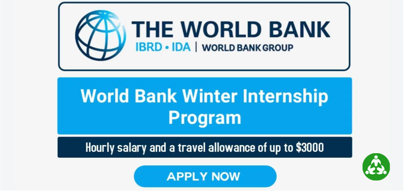

31
Jan
The Bank Internship Program (BIP)
The Bank Internship Program (BIP) offers highly motivated individuals an opportunity to be exposed to the mission and work of the World Bank. The internship allows individuals to bring new perspectives, innovative ideas and research experience into the Bank’s work, while improving skills in a diverse environment. In addition, it is a great way to enhance CVs with practical work experience. Internships are available in both development operations and other business units (such as Human Resources, Communications, Accounting, etc.) however, availability during a given internship term is based on business need.
Eligibility Criteria
To be eligible for an Internship, candidates must have an undergraduate degree and be enrolled in a full-time graduate study program (pursuing a master’s degree or PhD with plans to return to school full-time). There is no age limit.
Fluency in English is required. Knowledge of languages such as: French, Spanish, Russian, Arabic, Portuguese, and Chinese is desirable. Other skills such as computing skills are advantageous.
We value diversity in our workplace, and encourage all qualified individuals, particularly women, with diverse professional and academic backgrounds to apply. Our aim is to attract and recruit the best talent in the world.
Additional Information
The WB Internship Program typically seeks candidates for: Operations (Front Line) in the following fields: economics, finance, human development (public health, education, nutrition, population), social sciences (anthropology, sociology), agriculture, environment, engineering, urban planning, natural resources management, private sector development, and other related fields; or Corporate support (Accounting, Communications, Human Resources Management, Information Technology, Treasury, and other corporate services).
The WB pays an hourly salary to all Interns and, where applicable, provides an allowance toward travel expenses up to USD 3,000 at the discretion of the manager. These travel expenses can only include transport expenses (airfare) to or from the duty station city. Interns are responsible for their own accommodations. Driven by business needs, most Intern positions are based in Washington, DC with a few others in the WB country offices. Usually, internship opportunities are for a minimum of four weeks.
The WB Internship is offered twice a year:
- Summer Internship (May–September): The application period is December 1–January 31 each year.
- Winter Internship (November–March): The application period is October 1-31 each year.
J1 visa holders need to obtain a G4 visa abroad prior to starting employment or unpaid internship at the WB.
Application Process
Applications must be completed by 11:59 PM UTC (Coordinated Universal Time) on the last day of the application period. Take time to prepare your application and enter your personal information accurately. You will be asked to upload the following documents:
- Curriculum Vitae (CV)
- Statement of Interest
- Proof of Enrollment in a graduate degree
Application Checklist:
The following application checklist is meant to facilitate your application experience.
- Ensure that you use either Google Chrome, Mozilla Firefox, Apple Safari, or Internet Explorer 10 or higher as your browser version.
- Please make sure that you are connected with a reasonable bandwidth of internet connection without any network/firewall restriction.
- You will be asked to register for an account and provide an email address. Ensure that you have correctly spelled out your email address, since this will be our main channel of communication with you regarding your candidacy.
- You must complete your application in a single session and you will only be able to submit it if you have uploaded all the required documents and answered all the questions (all questions marked with an asterisk-*- are required).
- Please complete the application within 90 minutes to avoid a system timeout.
- Remember to enter your complete phone number (country code + city code + number).
- Please do not enter any special characters (â-<=>&#â, etc.) in any of the application fields. Try not to copy and paste any characters/text from Microsoft Word.
Please upload the following documents (mandatory) before submitting your application:
- Curriculum Vitae (CV)
- Statement of Interest
- Proof of Enrollment in a graduate degree
Note: Each file should not exceed 5 MB and should be in one of the following formats: .doc, .docx, or .pdf
- Please make sure that the filenames of the documents that you are attaching do not contain any special characters, such as â-<+>&#â, etc. PDF files are the best files to upload.
- Once you submit your application, you will not be able to make any further changes/updates.
- Upon submission of your application you will receive an email confirmation providing you with your application number.